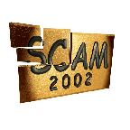

<!DOCTYPE HTML PUBLIC "-//W3C//DTD HTML 4.0 Frameset//EN">

<!--Converted with LaTeX2HTML 2K.1beta (1.61)
original version by:  Nikos Drakos, CBLU, University of Leeds
* revised and updated by:  Marcus Hennecke, Ross Moore, Herb Swan
* with significant contributions from:
  Jens Lippmann, Marek Rouchal, Martin Wilck and others -->
<HTML>
<HEAD>
<TITLE>Call for Papers
SCAM 2002
Second IEEE&nbsp;International Workshop on Source Code Analysis and Manipulation</TITLE>
<META HTTP-EQUIV="Content-Type" CONTENT="text/html; charset=iso-8859-1">
<META HTTP-EQUIV="Content-Style-Type" CONTENT="text/css">

<META NAME="Robots" CONTENT="nofollow">
<META NAME="Generator" CONTENT="LaTeX2HTML v2K.1beta">
<META HTTP-EQUIV="Content-Style-Type" CONTENT="text/css">
</HEAD>
<FRAMESET ROWS="36,*">
<FRAME SRC="home_hd.html" SCROLLING="no" FRAMEBORDER=0 MARGINHEIGHT=0 MARGINWIDTH=0>
<FRAME SRC="home_ct.html" NAME="contents" SCROLLING="auto" FRAMEBORDER=1 MARGINHEIGHT=3 MARGINWIDTH=5>

<NOFRAMES>
<BODY bgcolor="#ffffff" text="#000000" link="#9944EE" vlink="#0000ff" alink="#00ff00">

<!--Navigation Panel-->
<A NAME="tex2html228" HREF="Resources_from_Workshop_mn.html" TARGET="_top">
</A> 
 
 
<A NAME="tex2html226" HREF="home_tf.html" TARGET="_top">
</A>  <A NAME="tex2html11" HREF="home.html" TARGET="_top"></A>
<BR>
<B> Next:</B> <A NAME="tex2html229" HREF="Resources_from_Workshop_mn.html" TARGET="_top">Resources from the Workshop</A>
 &nbsp <B>  <A NAME="tex2html227" HREF="home_tf.html" TARGET="_top">Contents</A></B> 
<BR>
<BR>


<center>
A printer-friendly single page call-for papers  available in <A href=cfp.ps>Postscript</A> and <A href=cfp.pdf>PDF</A>

The contents of this entire website are also available (in printer friendly format) as <A href=home.ps>Postscript</A> and <A href=home.pdf>PDF</A>
</center>

<P>
<DIV ALIGN="CENTER">
<A NAME="tex2html12" HREF="http://www.tourism-montreal.org/" TARGET="_top"><!-- MATH
 $\epsfig{figure=pictures/bonjour.eps,height=1.8in,width=2.5in}$
 -->
</A>&nbsp;&nbsp;

<!-- MATH
 $\epsfig{figure=pictures/logo2002.eps,height=2in,width=2in}$
 -->
&nbsp;&nbsp;
		<A NAME="tex2html13" HREF="http://www.tourism-montreal.org/" TARGET="_top"><!-- MATH
 $\epsfig{figure=pictures/skyline.eps,height=1.8in,width=2.5in}$
 -->
</A>
<BR></DIV>
<P>
<DIV ALIGN="CENTER">
</DIV>
<H1 ALIGN="CENTER">
Call for Papers
<BR><B>SCAM 2002</B>
<BR><I>Second <A NAME="tex2html2" HREF="http://www.ieee.org/" TARGET="_top">IEEE</A>&nbsp;International Workshop on Source Code Analysis and Manipulation</I></H1>
<P ALIGN="CENTER"><STRONG>1st October 2002,
<BR><B>Montreal, Canada</B>,
<BR>
Location: CRIM 
<BR>
address: 550 Sherbrooke Street West
<BR>(just a very short walk from the ICSM conference hotel)
<BR>
<BR>
Co-located with
<BR><A NAME="tex2html3" HREF="http://www.ieee.org/" TARGET="_top">IEEE</A>&nbsp;International Conference on Software Maintenance, (<A NAME="tex2html4" HREF="http://www.icsm2002.org/" TARGET="_top">ICSM 2002</A>)
<BR>
Fourth <A NAME="tex2html5" HREF="http://www.ieee.org/" TARGET="_top">IEEE</A>&nbsp; Workshop on Web Site Evolution, (<A NAME="tex2html6" HREF="http://star.itc.it/wse2002/" TARGET="_top">WSE 2002</A>)
<BR>
Eighth <A NAME="tex2html7" HREF="http://www.ieee.org/" TARGET="_top">IEEE</A>&nbsp; Workshop on Empirical Studies of Software Maintenance, (<A NAME="tex2html8" HREF="http://www.info.uqam.ca/~lounis/wess2002_cfp.htm" TARGET="_top">WESS 2002</A>)
<BR>
Database Maintenance and Reengineering Workshop (<A NAME="tex2html9" HREF="http://alarcos.inf-cr.uclm.es/dbmr2002/principaldmr.htm" TARGET="_top">DBMR 2002</A>)
<BR></STRONG></P>
<P ALIGN="CENTER"><STRONG><B>Sponsored by</B> 
                      Institute of Electrical and Electronics Engineers (<A NAME="tex2html10" HREF="http://www.ieee.org/" TARGET="_top">IEEE</A>)
<BR>
</STRONG></P>

<P>
<BR><HR>
<!--Table of Child-Links-->
<A NAME="CHILD_LINKS"></A>

<UL CLASS="ChildLinks">
<LI><A NAME="tex2html230" HREF="Resources_from_Workshop_mn.html" TARGET="main"><SMALL>Resources from the Workshop</SMALL></A>
<UL>
<LI><A NAME="tex2html231" HREF="Group_Photo_mn.html" TARGET="main"><SMALL>Group Photo</SMALL></A>
<LI><A NAME="tex2html232" HREF="Slides_mn.html" TARGET="main"><SMALL>Slides</SMALL></A>
<LI><A NAME="tex2html233" HREF="Top_ten_ish_recommended_boo_mn.html" TARGET="main"><SMALL>Top ten(ish) recommended books and papers</SMALL></A>
<LI><A NAME="tex2html234" HREF="Top_ten_ish_myths_Source_Co_mn.html" TARGET="main"><SMALL>Top ten(ish) myths of Source Code Analysis and Manipulation</SMALL></A>
<LI><A NAME="tex2html235" HREF="Summary_Discussions_mn.html" TARGET="main"><SMALL>Summary of Discussions</SMALL></A>
</UL>
<BR>
<LI><A NAME="tex2html236" HREF="Location_mn.html" TARGET="main"><SMALL>Location</SMALL></A>
<LI><A NAME="tex2html237" HREF="Keynote_Speaker_mn.html" TARGET="main"><SMALL>Keynote Speaker</SMALL></A>
<LI><A NAME="tex2html238" HREF="Journal_Automated_Software__mn.html" TARGET="main"><SMALL>The Journal of Automated Software Engineering&nbsp;Special Issue</SMALL></A>
<LI><A NAME="tex2html239" HREF="Paper_Submission_Informatio_mn.html" TARGET="main"><SMALL>Paper Submission Information</SMALL></A>
<LI><A NAME="tex2html240" HREF="About_SCAM_mn.html" TARGET="main"><SMALL>About SCAM</SMALL></A>
<UL>
<LI><A NAME="tex2html241" HREF="Aims_mn.html" TARGET="main"><SMALL>Aims</SMALL></A>
<LI><A NAME="tex2html242" HREF="Topics_Covered_mn.html" TARGET="main"><SMALL>Topics Covered</SMALL></A>
<LI><A NAME="tex2html243" HREF="Definition_Source_Code_mn.html" TARGET="main"><SMALL>Definition of `Source Code'</SMALL></A>
<LI><A NAME="tex2html244" HREF="Important_Dates_mn.html" TARGET="main"><SMALL>Important Dates</SMALL></A>
</UL>
<BR>
<LI><A NAME="tex2html245" HREF="Technical_Program_mn.html" TARGET="main"><SMALL>Technical Program</SMALL></A>
<UL>
<LI><A NAME="tex2html246" HREF="Keynote_Address_mn.html" TARGET="main"><SMALL>Keynote Address</SMALL></A>
<LI><A NAME="tex2html247" HREF="Testing_Metrics_Maintenance_mn.html" TARGET="main"><SMALL>Testing, Metrics, Maintenance</SMALL></A>
<LI><A NAME="tex2html248" HREF="Source_Transformation_Sourc_mn.html" TARGET="main"><SMALL>Source Transformation, Source Processing</SMALL></A>
<LI><A NAME="tex2html249" HREF="Slicing_mn.html" TARGET="main"><SMALL>Slicing</SMALL></A>
<LI><A NAME="tex2html250" HREF="Dependence_Graphs_Static_An_mn.html" TARGET="main"><SMALL>Dependence Graphs, Static Analysis</SMALL></A>
</UL>
<BR>
<LI><A NAME="tex2html251" HREF="Registration_mn.html" TARGET="main"><SMALL>Registration</SMALL></A>
<LI><A NAME="tex2html252" HREF="Accepted_Papers_mn.html" TARGET="main"><SMALL>Accepted Papers</SMALL></A>
<LI><A NAME="tex2html253" HREF="SCAM_Committees_mn.html" TARGET="main"><SMALL>SCAM Committees</SMALL></A>
<UL>
<LI><A NAME="tex2html254" HREF="Chairs_mn.html" TARGET="main"><SMALL>Chairs</SMALL></A>
<LI><A NAME="tex2html255" HREF="Steering_Committee_mn.html" TARGET="main"><SMALL>Steering Committee</SMALL></A>
<LI><A NAME="tex2html256" HREF="Program_Committee_mn.html" TARGET="main"><SMALL>Program Committee</SMALL></A>
</UL>
<BR>
<LI><A NAME="tex2html257" HREF="Printable_Call_Papers_mn.html" TARGET="main"><SMALL>Printable Call for Papers</SMALL></A>
<LI><A NAME="tex2html258" HREF="History_SCAM_mn.html" TARGET="main"><SMALL>History of SCAM</SMALL></A>
<LI><A NAME="tex2html259" HREF="Enquiries_about_workshop_mn.html" TARGET="main"><SMALL>Enquiries about the workshop</SMALL></A>
<LI><A NAME="tex2html260" HREF="Contents_mn.html" TARGET="main"><SMALL>Contents</SMALL></A>
</UL>
<!--End of Table of Child-Links-->

<HR>
<ADDRESS>
Mark Harman, Department of Information Systems and Computing, Brunel University, Uxbridge, Middlesex, UB8 3PH.
</ADDRESS>
</NOFRAMES></FRAMESET>
</HTML>
